Define Arguments Dialog - Grid Components
|
Arguments that use a prompt to obtain their value:
Once the Define Arguments dialog opens, click the Insert New Argument button.
-
This will open the New Argument dialog. Enter the name of the argument into the Argument Definition > Name field.
-
Select the data type of the argument in the Argument Definition > Data Type list. The options are:
-
"Character"
-
"Numeric"
-
"Logical"
-
"Date"
-
"Time"
-
"Y-Shorttime"
-
"K-UUID"
-
Click OK to close the New Argument Dialog. You should see your new argument added to the Define Argument dialog's Existing Arguments list.
-
Go to the menu on the right side of the Define Arguments Dialog and look at the Argument Definition portion of the menu. You will notice the Name and Data Type have now been filled.
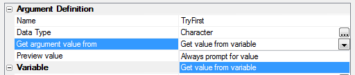
Setting 'Get Argument value from'
-
Under the Argument Definition options go to the Get argument value from option. Define the type of source the argument's value will use. The options are:
-
"Always prompt for value" - continue with Define Prompt Dialog
-
"Get value from variable" - continue with Getting the Argument from a Variable.
-
If you selected 'Always prompt for value' option you will notice a Define prompt option appear. If you click the button
 next to this option it will open the
Define Prompt Dialog. Add the
Prompt Text of the prompt that asks for the
value for the Argument and click OK to
exit the Define Prompt dialog. Click OK
again to save your inputs, create the argument, and exit the Define Argument Dialog.
next to this option it will open the
Define Prompt Dialog. Add the
Prompt Text of the prompt that asks for the
value for the Argument and click OK to
exit the Define Prompt dialog. Click OK
again to save your inputs, create the argument, and exit the Define Argument Dialog.


Prompt Text
|
Arguments that get their value from a variable:
-
If you selected 'Get Value from variable' in the 'Get argument value from' option, you will need to define the variable. Under the Variable section of the Define Arguments menu click the button
to
the right to open the Select Variable Dialog. -
Click the Add New Variable button to add a new variable.
-
This will open the New Variable dialog. Define a name for your new variable and also select your variable's scope. Your options are...
- Session Variable
- Cookie
- Page variable
- Click OK to create the argument or, optionally, repeat this procedure to create another argument.
-
Click OK to save your inputs or Cancel to discard your inputs when you have completed defining arguments.

|
|
Print the value of an argument in a freeform region.
1. Open the Grid Builder
2. Select DBF under Data Source and in Query select the Customer Table in AlphaSports.
Define an Argument:
3. In the Define Arguments dialog click Insert Argument.
4. In the New Argument dialog give this argument the Argument Name 'st' and set its Data Type to Character. Click OK
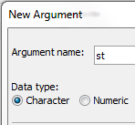
5. Under Argument Definition set the 'Get Argument Value from' setting to 'Get value from variable'.
6. Under Variable click
the Variable button
 and
open the New Variable dialog.
and
open the New Variable dialog.
7. Click Add New Variable. Next to Variable Name type pgstate. Click the Scope dropdown set the scope to 'Page Variable'. Click OK to close the new variable dialog.
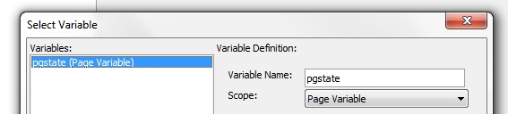
8. Now back in the Default Arguments Dialog, Go to the Variable settings and set the Default value to ma.
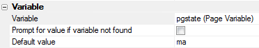
Define a second Argument:
9. Click Insert Argument again to insert a second argument into the Default Arguments dialog's Existing Arguments list.
10. In the New Argument dialog, give this argument the Argument Name 'ln'. Set its Data Type to Character. Click OK
11. Under Argument Definition set the 'Get Argument Value from' setting to 'Get value from variable'.
12. Under Variable click
the Variable button
 and
open the New Variable dialog.
and
open the New Variable dialog.
13. Click Add New Variable. In Variable Name type 'varin'. Set the Scope drop-down to 'Page Variable'. Click OK to close the new variable dialog.
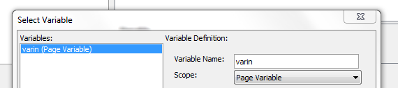
14. In the Default Arguments Dialog, Set the Variable settings Default value to 'a'.
15. Click OK to exit the Define Arguments Dialog.
|
Place the Arguments in a Filter Expression
16. On the Filter shown in the Design > Grid > Query page of your Grid Builder click the button to open the Expression Builder.
17. In the Expression Builder menu double click the Field Name option, or hit F2, to load the field names from the Customer table. Select 'Bill_State_Region' from the Select Field dialog that loads. You will see the Field now in the Expression Builder. Put a equals sign = after the Bill_State_Region field.
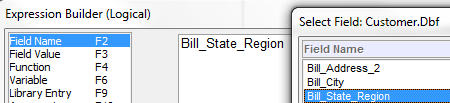
18. Next double click on 'Argument' in the Expression Builder menu, or hit F10.
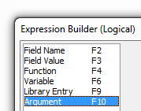
19. From Insert Arguments dialog select 'st', click on it so that it is highlighted in blue. Then click OK
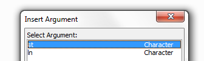
20. Click the .AND. button in the Expression Builder to add this to your expression.
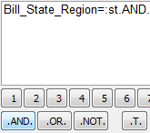
21. Hit F2 and add a second field, this time select 'Lastname'.
22. Place a greater than sign in the Expression, either via the keyboard or by clicking the greater than button.
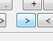
23. Finally, add you second Argument. Hit F10 opening the Insert Arguments dialog, and select 'ln' then click Insert. The Expression should look like this.
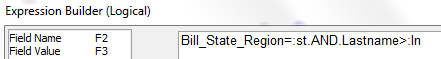
24. Click OK to close the Expression Builder and add the Expression to your Query page.
Print the Value to the Grid.
24. On the Grid Builder's Design page menu click on Grid > Properties and open the Properties page.
25. Scroll down to the Freeform
Edit Regions properties and select the Above
Grid Property. Click the button
 on
the Above Grid row.
on
the Above Grid row.
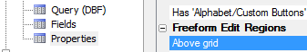
26. This will open the Freeform Edit Region dialog. Copy and paste the following HTML into the edit region.
|
|
27. Go to the Grid > Fields page in the Design menu. Open the page.
28. Click the Insert... written below the Available Fields list to open the Insert Special Control dialog.
29. Click [Button] control and then click OK.
30. In the Field Properties list on the right side of the Grid > Fields page scroll down until you reach the Javascript Properties.
31. Select the onClick
property and click the button
 next to it.
next to it.
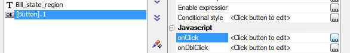
32. The Edit onClick Event Editor will appear. From the radio buttons at the top of the editor select Text mode.
33. Copy and Paste the following code into the edit area. Click Save.
|
|
34. Now go to Working Preview. Notice the text 'Showing Records in State' at the top of the grid. Click on the Button that you created. A message with 'ma' will appear. Click OK.
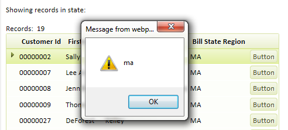
35. Now the Javascript fires, retrieves the value of the argument 'ma', and then sets the value of the span tag. You should see a 'ma' next to the Showing records in state text.
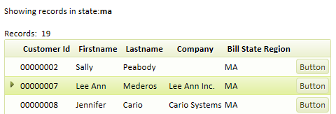
Now remove code from button go to a client-side event go to show All .. onGridRenderComplete event. Paste in code, remove alert, save. Run the grid, have the value of the argument
Shows how you can use a method of the grid object to retreive the value of any argument that was passed into the grid and has been used in the grid filter.
See Also
Define an Alpha Anywhere Table Query, Define an Alpha Anywhere View Query